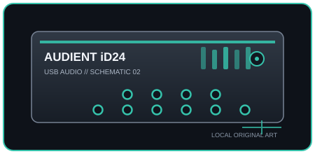

[ INDIVIDUAL COMPONENT // SOUND ]
Audient iD24
A compact USB interface with two Class-A Audient mic preamps, two headphone outputs, and optical digital expansion.

IDENTIFICATION: Manufacturer/model: Audient iD24 USB-C audio interface. Verify the full model and hardware/firmware revision on the unit; similarly named generations may have different ports, drivers, or channel counts.
Specifications
| Catalog subcategory | USB audio interfaces |
|---|---|
| Model / SKU identity | Audient iD24 USB-C audio interface; model-level identity, not a retailer bundle SKU. |
| Analog, digital I/O and host channels | 10-in/14-out maximum including two analog inputs, stereo analog line outputs/headphone outputs, and optical ADAT or S/PDIF; ADAT carries up to 8 channels at 44.1/48 kHz and 4 at 88.2/96 kHz. Confirm the routing matrix for the selected optical format. |
| Conversion, sample rate and bit depth | 24-bit; 44.1, 48, 88.2, or 96 kHz. |
| Mic preamps / phantom power | Two Class-A Audient console mic preamps with combo mic/line inputs, plus a front instrument input; +48 V phantom power is individually switchable per mic input. |
| USB generation / class compliance | USB-C connector with USB 2.0 High-Speed transport; class-compliant on macOS and supported iOS/iPadOS hosts; external power is not normally required for standard desktop operation, but host/connected-device power limits still apply. |
Drivers, host compatibility & latency
- macOS Core Audio and iOS/iPadOS class-compliant use are documented; Windows requires the Audient iD driver/software. Confirm OS version, USB host power, and optical clock/routing setup.
- The iD mixer supports low-latency direct monitoring, but software round-trip delay still depends on operating system, driver, DAW buffer, sample rate, and plug-ins; smaller buffers can cause dropouts.
- For predictable recording, match the interface and DAW sample rates, select the model-specific manufacturer driver where required, test the intended buffer under real session load, and retain a higher-buffer fallback for dense projects.
Identification and preservation notes
Photograph the underside model label and connector panel; record serial/model identifiers, revision, firmware, included power supply, optical mode, and installed driver version. Do not infer channel count or supported sample rate from a connector or product-family name alone.
Sources & further reading
- Audient — iD24 technical specificationsManufacturer specification sheet covering conversion and I/O.
- Audient — iD24 downloads and manualsManufacturer product downloads and operating documentation.
Manufacturer documentation is the authority for exact revisions and supported hosts. Verify regional SKU and operating-system support against the physical unit.